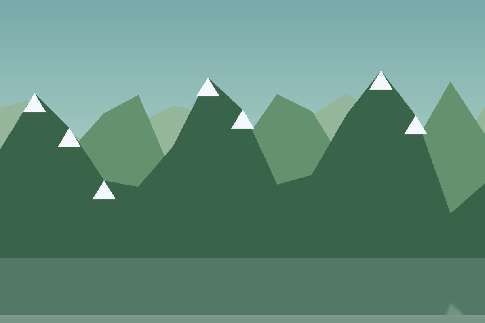

Roháče
Krátky popis výletu do Roháčov

Oravský hrad
Krátky popis výletu na Oravský hrad

Oravská priehrada
Krátky popis výletu na Oravskú priehradu
Roháče 2
Krátky popis výletu do Roháčov
Oravský hrad 2
Krátky popis výletu na Oravský hrad
Oravská priehrada 2
Krátky popis výletu na Oravskú priehradu